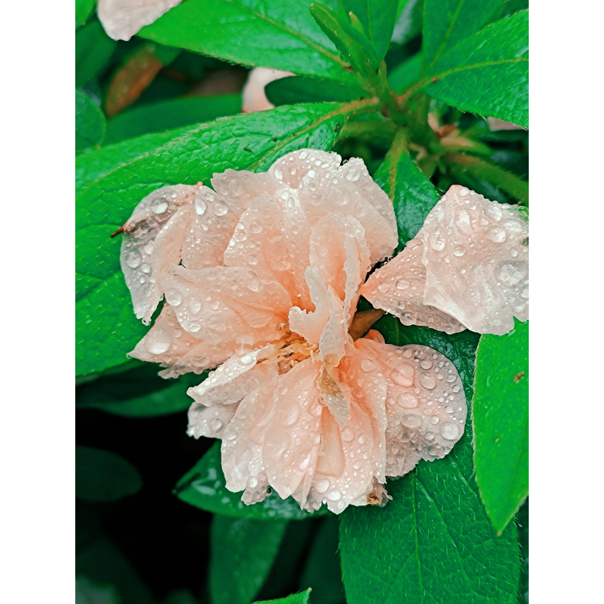
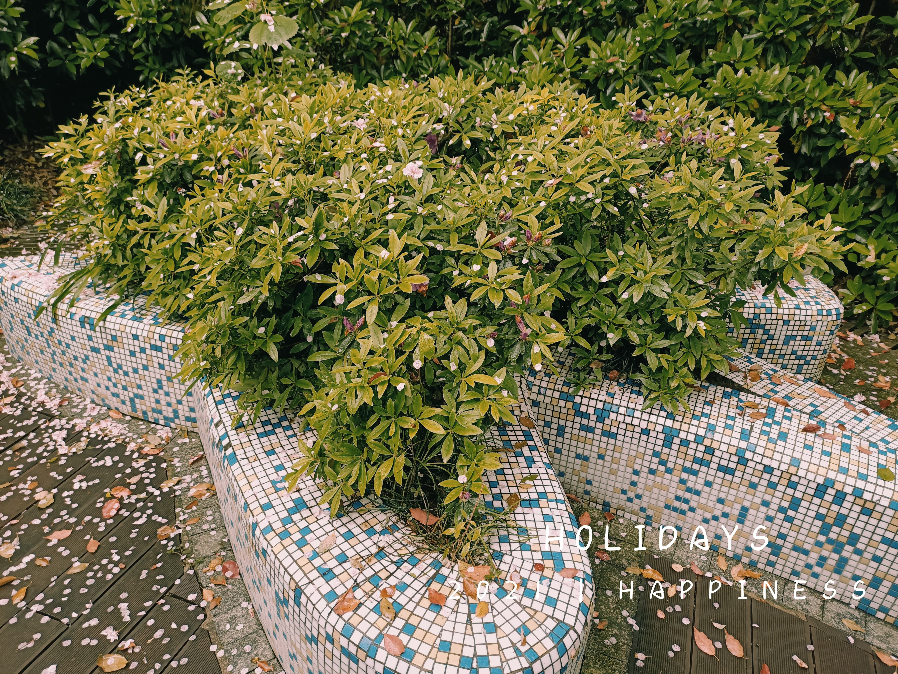
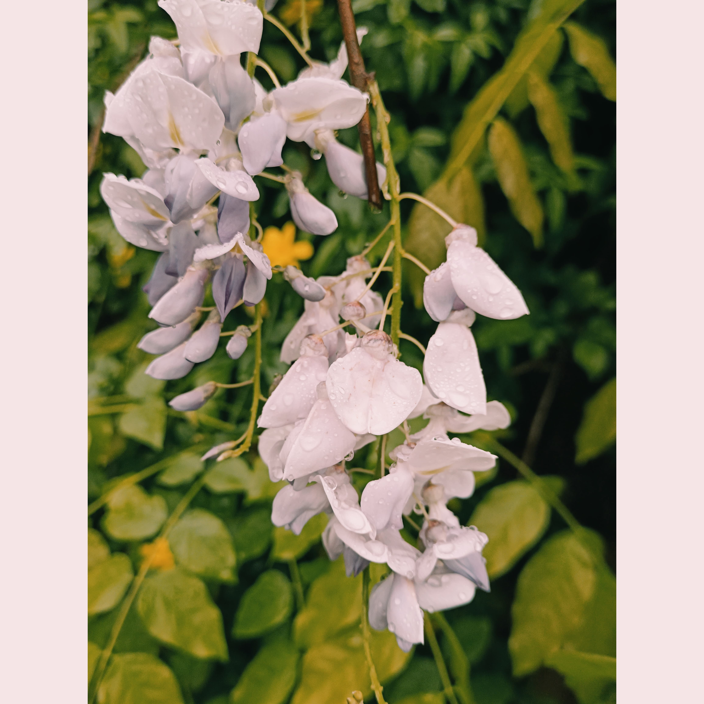
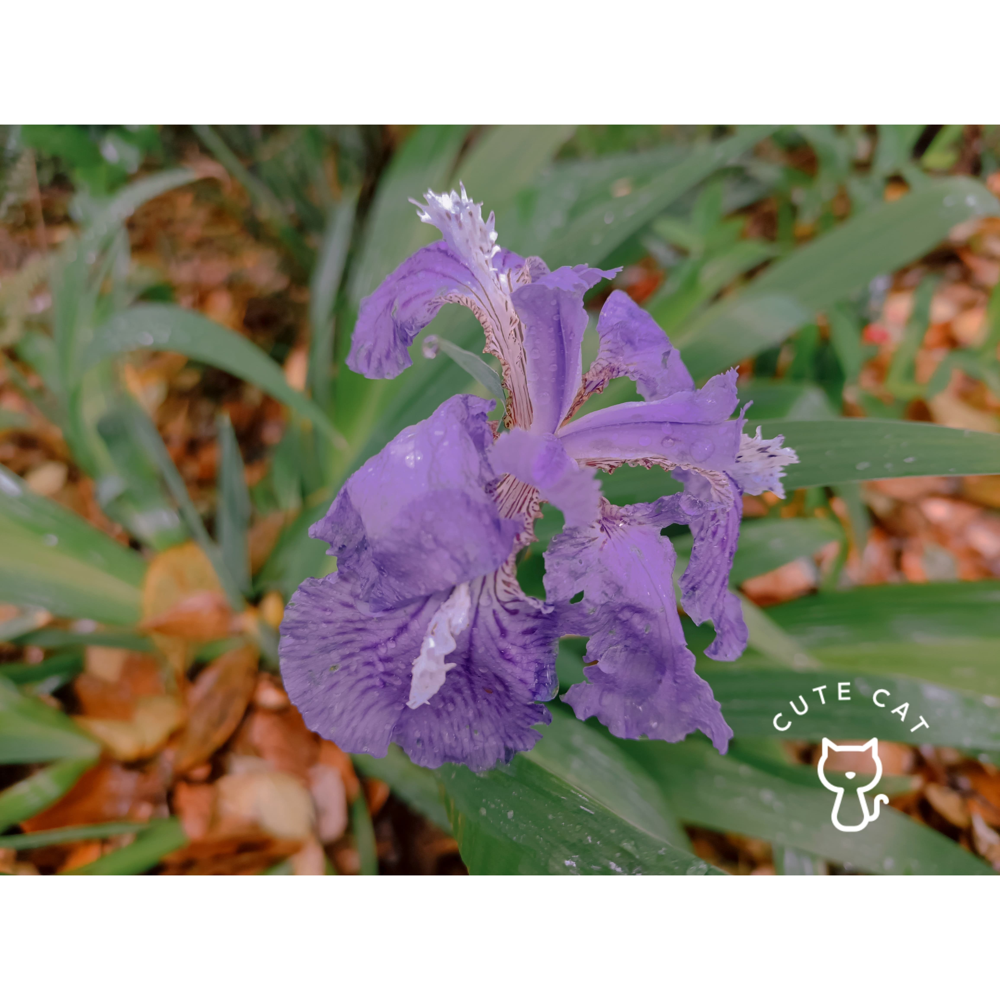

加载中...
文章
14
标签
11
分类
12
Home
Tags
Categories
About
哒哒哒！
Home
Tags
Categories
About
travel
发表于
2021-04-06
|
更新于
2021-09-17
|
生活派
旅行
|
阅读量:
久违的踏青，天上也下着小雨，路上没有多少行人，自然中的清新感也扫去了心中的烦闷感




文章作者:
流星の涙
文章链接:
https://atonioy.github.io/2021/04/06/travel/
版权声明:
本博客所有文章除特别声明外，均采用
CC BY-NC-SA 4.0
许可协议。转载请注明来自
哒哒哒！
！
生活随记
上一篇
数据库中的注意事项
下一篇
背影
相关推荐
2021-05-15
广佛游记
流星の涙
文章
14
标签
11
分类
12
Follow Me
公告
This is my Blog
最新文章
计算机网络概述
2021-09-17
Servlet学习
2021-09-16
Jsp技术
2021-07-30
协议栈如何处理数据
2021-07-26
CSS
2021-07-02